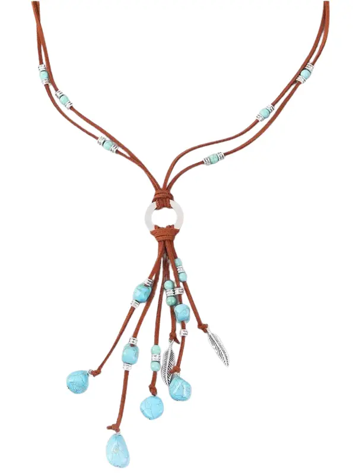
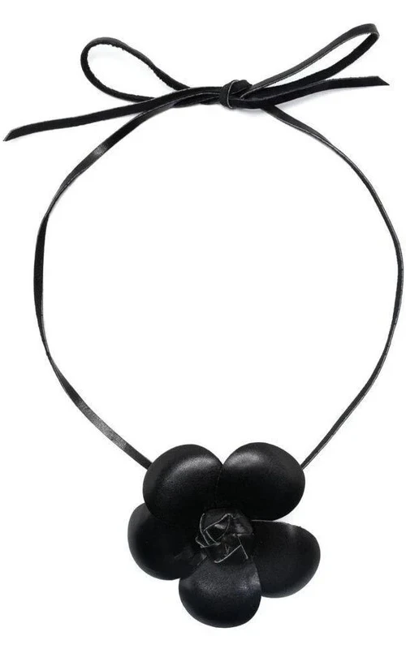
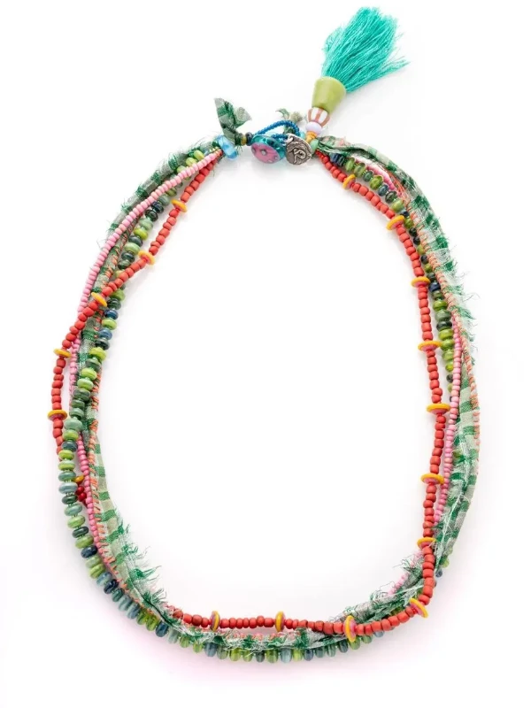
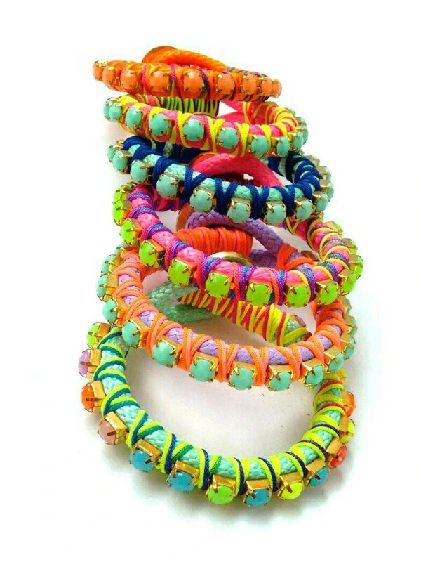

Inspirate con nuestras creaciones únicas hechas con cristales y piedras naturales.

Hecho a mano con piedra y cordón

Perfecto para complementar tus looks

Diseño para tus looks más juveniles y festivos
Diseño en tonos pasteles con mostacillas de vidrio

Diseño moderno tejido a mano
Diseño clásico Hecho a mano